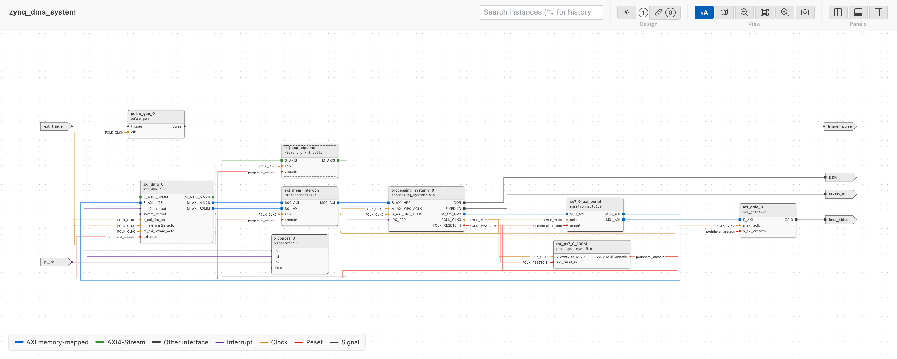

Viewing a System Design¶
IPCraft can show a Vivado block design or a Platform Designer system as a diagram. The view is read-only and works offline. It needs no vendor tool and no license, and it never runs your script.

Supported files¶
| File | Source |
|---|---|
.tcl |
Vivado block design script written by write_bd_tcl |
.bd |
Vivado block design file (JSON, Vivado 2018.3 and later) |
.qsys |
Platform Designer system (Standard) |
.tcl |
Platform Designer system script for qsys-script |
IPCraft recognizes a .tcl file by its commands. A _hw.tcl file is a
component description, not a system. It keeps its own preview.
Files are read as text. The Tcl is never executed, so values that a script computes are not available. See What the offline view cannot show.
Open the diagram¶
- Open the
.tcl,.bdor.qsysfile in the text editor. - Press
Ctrl+Shift+V(Cmd+Shift+Von macOS), or run IPCraft: Open as System Diagram. - Press the same keys again to return to the text editor.
The diagram updates as you edit the file. If an edit breaks the file, the diagram keeps the last valid design and shows a banner with the reason.
Navigate¶
The diagram shows one hierarchy level at a time.
The toolbar buttons are icons in three groups: Design (Clocks and resets, Unconnected pins, Compare), View (Simplify zoomed out, Minimap, zoom out, Fit, zoom in) and Panels. Hover a button to see its name.
- Levels. Double-click a hierarchy block to enter it. Use the breadcrumb at the top left, or the mouse back button, to go up one level. The mouse forward button returns to the levels you left with the back button, one at a time, until you go to another level some other way.
- Expand in place. Click the + button in the header of a hierarchy block, or right-click it and choose Expand In-Place, to see inside without leaving the level. The block becomes a frame with its pins on the border: wires from outside meet the pins from outside, and the wires inside meet them from inside. Click - in the frame header, or right-click and choose Collapse, to fold it again. The block stays where it is on screen when it opens into a frame, and when you fold it again. Open Subsystem in the same menu enters the block like a double-click. Hierarchy blocks inside a frame can be expanded too, and expanded blocks stay expanded when you go to another level and back. Isolate works on the blocks of the level on show, not on those inside a frame.
- Outline. Lists the instances of the current design and its external ports. Select an item to select it in the diagram and center it. While a search is on, it lists the search results instead.
- Search. Type in Search instances to dim the blocks whose name or
type does not match. The outline opens and lists every match on every
level under its hierarchy blocks, which are shown muted when they do not
match themselves; click a result to go to it. Clear the search to get the
full outline back.
*stands for any characters and?for one character, soaxi*fifofindsaxis_data_fifo_0. The Match Case and Match Whole Word buttons next to the box narrow the matches: with Match Whole Word,countfinds a block namedcountbut notcount_0, andcount*finds both. Press Enter or Shift+Enter to go to the next or previous match on any level; a counter shows the position, and Escape clears the search. As in the VS Code text editor, Ctrl+F (Cmd+F on macOS) moves to the search box from anywhere in the viewer with its text selected, filled in with the name of the selected block unless the search already matches it, and F3 or Shift+F3 goes to the next or previous match. Up and Down in the search box go through your earlier searches, as in the VS Code find box. A search is remembered when you step through its matches or leave the box, and the history lasts while the viewer is open. - Details. Shows the selected block, net, or port: type, where it is defined in the file, the parameters set in the file, and its pins with their nets. Select a line link to open the file at that line.
- Address map. Lists the address segments found in the design. Select a row to select its instance.
- Clocks. Lists the clock domains with their frequencies and the clock domain crossings. See Clock and reset domains.
- Resets. Lists the reset sources and the reset domain crossings.
- Filter a bottom panel tab. The box at the right of the tabs lists only
the rows of the tab on show that have its text in a column, ignoring case,
with
*for any characters and?for one. Each tab keeps its own filter, the tab counts stay those of the design, and Escape clears the box.

Isolate blocks¶
To focus on a few blocks of a busy level, select them and isolate them.
- Click a block or port, then Cmd+Click (macOS) or Ctrl+Click (Windows and Linux) to add more, or to remove one that is already selected. Details shows "N selected" with a list of the names; clicking a name selects that block alone.
- Right-click one of the selected blocks and choose Isolate N Selected (N is the number of selected blocks). Right-clicking a block that is not selected selects it alone, and the item reads Isolate Selection.
The diagram then shows the selected blocks, the wires that touch them, and the block or port at the other end of each of those wires, laid out compactly. Wires between two of the other blocks stay hidden, unless 1-hop already shows everything connected to the selection. Clock and reset nets bring in no block of their own; their wires are drawn only between the blocks that are shown, with badges on the pins. A toolbar chip reads "Isolated · N selected · M of T shown", where M counts the blocks and ports on screen and T those of the level. Next to it, + shows the blocks one connection further out (the chip reads "2-hop", "3-hop", and so on), and - removes the outermost ring again. + stops, and the chip adds "all connected", once every connected block and every wire between them is shown (the wires between the outermost blocks appear at that last step). With the canvas focused (click empty canvas), the + and - keys do the same. Isolating again, including a different selection from inside an isolated view, always starts at 1-hop; clicking blocks without isolating keeps the view and its radius. Clock and reset nets never bring in a block, at any step.
Choose Show All from the right-click menu (on a block or on the empty canvas) or the toolbar to return to the full level, with the zoom and pan it had before. Isolation also ends when you go to another level (breadcrumb, opening a hierarchy block, the mouse back button, or an outline or search jump) or when a search step or outline row selects a block that the isolated view hides.
Find unconnected pins¶
To review the pins that nothing connects to, turn on Unconnected pins in the toolbar. The button shows the number of unconnected pins in the whole design, in the warning color when any is undriven. Turning it on also opens the Unconnected tab of the bottom panel; turning it off leaves the tab as it is.
Turning the review on or off does not move any block, and it does not change Clocks and resets. While both are on, the clock domain colors, frequencies, and markers are paused until you turn the review off. A pin is unconnected when no net touches it on its level. There are two kinds:
- Undriven: an input (or a slave interface) that nothing drives. The vendor tool ties such an input to a constant, usually its default value, so an active-low reset tied to 0 holds the block in reset. Undriven pins are drawn in the warning color.
- Unused: an output, master interface, or bidirectional pin that nothing uses. This is often intentional, so unused pins are drawn muted.
While the review is on, the diagram dims wires and blocks without findings. Each unconnected pin gets a short dashed stub ending in a hollow circle, a block header shows a warning icon (a disconnect icon when nothing is undriven) with the count, and hovering it gives the undriven and unused split (hierarchy blocks count the pins inside them too). The outline shows a count on each block and external port.
Only blocks whose full pin list is known can be checked: blocks with an .ip.yml or HDL definition, hierarchy blocks and their pins, module references of a .bd file (the file lists all their ports), and external ports. For the other blocks (drawn with a dashed border), the viewer knows only the pins that appear in connections, so it cannot tell which pins are open. They are listed as not checked.
The Unconnected tab lists every finding with its pin, block, level, direction, type, where the pin is known from, and a link to the line that created it. The Undriven and Unused chips filter the rows. Click a row to go to its level, select the block, centre it (zooming in if it is too small to read), and mark the pin on the diagram and in Details. A hierarchy pin that is open on both sides is listed twice: once on the hierarchy block in the parent level and once as the port inside. Details shows undriven or unused in the Net column of every unconnected pin of a block whose full pin list is known, with or without the review on.
Panels¶
The outline, details, and bottom panels start hidden so the diagram has the full width. Use the three buttons at the top right to show or hide them. Drag the edge of a panel to resize it. For the arrow-key resize and the double-click that collapses a panel, see Keyboard Shortcuts.

Clocks and resets¶
Clock and reset nets are drawn as wires, one tree per net, from the driver to
every load on the level. A small dot marks where a branch leaves the tree; two
wires that cross without a dot are not connected. The wires are routed around
the blocks, in the gaps between them. Each pin that is on one of these nets
shows a badge with the net name at the end of its wire, or the first name and
+N when the pin is on several nets. Blocks are placed by their data and
interface connections, so the clock and reset wires never move them. The
external ports of the level form two columns: input ports on the left of every
block; output, bidirectional and unknown-direction ports on the right, ordered
to keep the wires short. A Platform Designer conduit export counts as an input
(conduit end) or an output (conduit start) unless the .ip.yml of the
exporting component makes its direction clear: when all its conduit signals are
outputs, or all are inputs, the export uses that direction. A block with no data
connection on the level, such as a clocking wizard or a reset block, sits next to
the block that drives its clock or reset.
Turn on Clocks and resets in the toolbar to color the clock and reset pins by clock domain, with the frequencies, crossings, and other markers described in Clock and reset domains. The badges and wires stay, and the blocks stay in place when you turn it on or off: the toggle only adds or removes the domain markers.
The count chip next to the toggle is always shown. It reads the number of
flagged crossings (2 CDC · 2 RDC, in the warning color), or the number of clock
domains when none is flagged, for the whole design. Click the chip to open the
Clocks tab of the bottom panel, expanding the panel if it is hidden; this
does not turn Clocks and resets on or off, and turning it on does not open
the tab.
Clock and reset domains¶
To see which clock each part of the design runs on, and where a signal passes
from one clock to another, turn on Clocks and resets in the toolbar. The
chip next to it shows the number of flagged crossings (2 CDC · 2 RDC, in the
warning color), or the number of clock domains when none is flagged; click it to
open the Clocks tab. The Unconnected pins review can be on at the same
time: it pauses the domain colors, frequencies, and markers. Turn the review off
and the domain decorations return. Neither toggle moves a block.
A clock domain is a clock source and every pin its nets reach, followed through hierarchy pins and, in Platform Designer, through clock source blocks. What matters is which pins share one clock; the frequency is extra information.
The source of a clock¶
Vivado's exported script does not list the driver of a net first, so IPCraft
does not take the first pin of a net as its source. The source is the one pin
that a rule names as a clock output (for example FCLK_CLK<n> of a Zynq PS,
clk_out<n> of a clocking wizard, pl<n>_ref_clk of Versal CIPS) or whose
direction the design or an .ip.yml states, such as an input port of the
design. When there is none or more than one, the source is not known: the
domain is still there, named after the first net of the clock, and Details says
"Source not known". A reset source is found the same way, from the rules for
reset outputs. The output of an xlconstant is a constant that never toggles,
so the sinks of a reset tied to it are OK ("Tied to a constant"). The
outputs of util_vector_logic, util_reduced_logic and axi_gpio
(gpio_io_o, gpio2_io_o) are known to drive a reset, but no rule says which
clock releases it, so its sinks are Not checked. A reset net without a known
source is still a reset source, named after its first net, with every pin on it
as a sink; an asynchronous input still passes, and every other sink is Not
checked.
Status outputs of clocking blocks, such as locked of a clocking wizard or
dcm_locked of a proc_sys_reset, are not clocks even when their net is named
like one. They belong to no domain and are drawn as ordinary nets.
Frequencies¶
A frequency is shown only when the design file sets it, never from a vendor default, and the word "unknown" is never printed for it: a domain without a frequency shows its name alone, and Details says "Frequency not set in the script." It is the requested value: Vivado can round the output of a processing system or a clocking wizard during validation, and the achieved frequency is not available offline.
| Clock source | Value read |
|---|---|
Zynq-7000 processing_system7, pin FCLK_CLK<n> |
CONFIG.PCW_FPGA<n>_PERIPHERAL_FREQMHZ |
Zynq UltraScale+ zynq_ultra_ps_e, pin pl_clk<n> |
CONFIG.PSU__CRL_APB__PL<n>_REF_CTRL__FREQMHZ |
Clocking Wizard clk_wiz, pin clk_out<n> |
CONFIG.CLKOUT<n>_REQUESTED_OUT_FREQ |
Platform Designer clock_source |
clockFrequency |
| External port or hierarchy pin | CONFIG.FREQ_HZ, or the -freq_hz flag of create_bd_port / create_bd_pin that Vivado writes in exported scripts |
When the parameter is not set, or the source has no rule, no frequency is shown.
An .ip.yml clock can declare the frequency it expects (frequency); Details
then checks it against the domain it sits on.
On the diagram¶
While Clocks and resets is on and the Unconnected pins review is off:
- The markers of clock pins take the color of their domain, and each clock pin of a domain with a frequency shows it next to the pin.
- The markers of reset pins take the color of the domain that releases the reset; an asynchronous reset, or one whose release clock is unknown, is muted.
- Data wires are dimmed, except the wires of a clock domain crossing, which are drawn dashed in the warning color. Clock and reset wires are not dimmed.
- The names of the pins at the ends of a crossing turn to the warning color: both ends of a clock domain crossing, only the sink pin of a reset domain crossing.
- A block header has a thin strip with one segment per clock domain of the block
and a badge:
N CDC · M RDCwhen crossings are on its pins (inside a hierarchy block, anywhere inside it), orN DOMAINSwhen it spans several domains. - The legend lists the domains of the level, and the outline shows a dot per domain on each block and the number of crossings inside each hierarchy block. Connections between related clocks are not counted or drawn as crossings.
Select a clock or reset net¶
Selecting a clock or reset net, with Clocks and resets on or off, selects its whole tree on every level: the pins and badges of the tree are highlighted, the blocks and ports it does not touch are dimmed, and the clock pins of a clock tree show the frequency. Details shows the tree:
- a clock tree with the frequency and the parameter it was requested by and
where (or "Frequency not set in the script."), the tree from the source
through every level with a check against the
.ip.ymlexpectation where there is one, the resets released on that domain, the crossings with other domains, and the blocks that have clocks on another domain too; - a reset tree with who releases the reset, a check per sink (
✓released on its own clock,✗clocked by another domain,?clock unknown,✓asynchronous input), and the reset domain crossings.
Selecting a block shows its clock pins with their domains, and for a block with a known pin list the clock of each interface and the release of each reset. A clock or reset port shows its domain.
Crossings¶
IPCraft checks memory-mapped and streaming connections (AXI, Avalon) and resets, followed through hierarchies.
- A clock domain crossing (CDC) is a connection whose two ends are clocked by different domains. No synchronizer is known between them: IPCraft does not look inside blocks.
- A reset domain crossing (RDC) is a reset sink that is clocked by a domain
other than the one that releases the reset, or a reset that is asynchronous
(the Zynq PS resets) feeding a sink that does not accept an asynchronous reset.
A
proc_sys_resetaccepts one onext_reset_inandaux_reset_in. - A connection between related clocks is neither flagged nor unchecked. The
outputs of one clocking wizard (
clk_wiz,clk_wizard) are related, and so is the clock that feeds its input (clk_in1,clk_in2, ...): Vivado times the paths between them. Neither the Clocks nor the Resets tab lists it; Details of its net says Related clocks, with the generator in its reason. Processor system clocks are never treated as related. - A block that spans domains (for example an asynchronous FIFO) is not
flagged. Its header badge reads
N DOMAINS, and its Details say "This block uses N clock domains" with their names. - A crossing is not checked when the clock of one end is unknown, when both clocks enter the design through ports, or when the source of one clock is not known. Two clocks that enter through ports may be one clock: the top level that uses the design decides. A port clock against a clock made inside the design (a PS clock, a clocking wizard output) is still a crossing.
The clock of an interface or reset pin is never guessed from its name. It comes
from the associatedClock of its .ip.yml, from the only clock of its block,
or from all clocks of its block being on one domain. For an external port it
comes from the CONFIG.ASSOCIATED_BUSIF and CONFIG.ASSOCIATED_RESET
parameters of a clock port. Otherwise the pin is not checked; the Clocks tab
and Details say why.
Platform Designer inserts clock-crossing adapters and reset synchronizers when it generates the system, so its crossings are OK, "Handled by Platform Designer", and neither tab lists any. The domains and frequencies are shown as for any other system.
The Clocks and Resets tabs¶
The Clocks and Resets tabs list what the level on screen shows: the current level plus the hierarchy blocks expanded in place on it. Entering a block, going back, or expanding or collapsing a block changes their rows and the counts on the tabs (the clock domains and the reset sources in view). The count chip next to Clocks and resets in the toolbar keeps counting the whole design, and clicking it opens the Clocks tab. Each tab has a table of sources and a table of crossings.
Clocks
- Clock domains: the domains with a pin, the source or a load, on a level in
view, with the frequency (empty when the design does not set it), the source
pin ("not known" when no rule or direction names it), the parameter the
frequency was read from (
scriptfor an IP parameter,declaredfor a port or hierarchy pin), the number of loads and levels, and a link to the source line. Click a row to select the clock net of the domain, centre the block of its source pin (zooming in when it is too small to read), and mark that pin. - Clock domain crossings: one line says how many data crossings in view have
no synchronizer ("No clock domain crossings on this level." when there are
none). A crossing is in view when either end is on a level in view: a crossing
from inside a collapsed block to a block on the level is listed, one entirely
inside a collapsed block is not (the header badge of that block counts it).
The table lists those crossings, each with a
!icon, the kind (the interface type), the pin at each end, the problem in plain words ("200 MHz to 100 MHz, no synchronizer"; domain names stand in for frequencies the script does not set or sets alike), and a link to the source line. Hover a row to see how the clock of each end was determined. Tick Show N that could not be checked to add the connections whose clocks are not known (?), with the reason as the problem. Click a row to select its net, centre the sink's block and mark the sink pin; it zooms in when the block is too small to read.
Resets
- Reset sources: each reset source with its source or a sink on a level in view, and the number of sinks. Click a row to select the reset net, centre the block of its source pin (zooming in when it is too small to read), and mark that pin. Details shows which clock releases the reset, when that is known.
- Reset domain crossings: one line says how many resets in view are released on another clock domain or asynchronously ("2 reset crossings without a synchronizer.", or "No reset domain crossings on this level."), scoped as above. The table has no Kind column, since every row is a reset: the icon, the reset source and the sink pin, the problem ("released by clk_a, clocked by clk_b", or "asynchronous reset, clocked by clk_b"), and a link to the source line. It has its own Show N that could not be checked checkbox, its rows show how each clock was determined on hover, and a click selects the net as in the Clocks tab.
Related clocks, blocks that span domains and connections that are fine are not listed in either tab.
Zoom¶
- Scroll or use the zoom in and zoom out buttons to zoom, and drag the canvas to pan.
- The Fit button (the full-screen icon) fits the whole level.
- Double-click a block (other than a hierarchy block) or a port to zoom to it.
- Double-click empty canvas to fit the level.
- Minimap (off by default) shows the whole level in the bottom right corner with the current view as a rectangle; selected blocks, search matches and hierarchy blocks stand out. Click or drag on it to pan, and use the wheel over it to zoom. It only changes what is drawn: blocks never move.
- Each level remembers its own zoom and position while the diagram is open.
- Simplify zoomed out, on by default, hides pin and port names, block subtitles, clock frequencies and badge text when you zoom out below about 42%, and enlarges the block names so that they stay readable. It only changes what is drawn: blocks never move. Turn it off to show everything at every zoom.
Compare with another revision¶
The file you have open is the current side of the comparison; what you pick is the base. Changes read from the base to the current side, so to see what a commit changed, open the newer file and pick the older one. To see what you changed, or what a pull request changed, click Compare (the git-compare icon in the Design group), or run IPCraft: Compare System Design with... from the command palette while a diagram is open. The picker lists, in groups:
- Open designs: the other system designs (
.bd,.tcl,.qsys) open in an editor tab as files on disk, with their folder. The text of the tab is used, so unsaved edits count. It is taken as it is at the moment you pick it and does not follow later edits of that file; pick it again to refresh. - Git: HEAD (the last commit) and Merge base with main (or
master), the commit where your branch left the default branch; it is offered when it differs from HEAD. - Commits that changed this file: the last 20 commits that touched the open file, with their message, short hash, date and author. Type a hash or an author to find one.
- Branches and Tags, by name. The branch you are on is not listed.
- Enter a revision...: any branch, tag or commit.
- Compare with File...: another system design file (
.bd,.tclor.qsys), for example a copy outside git.
The base may be in another format than the open file. A script written by
write_bd_tcl and the .bd of the same design can be compared, as can a .qsys and
its script, when you pick the other file (an open design or Compare with File...).
A file is read in its own format, a git revision in the format of the open file. The
Changes bar then adds "Different formats: only what both describe is comparable.",
because what one format leaves out cannot show up as a difference.
A file that is new since the base revision shows everything as added: the Changes bar
says "The file did not exist at HEAD: everything is added." (with the name of your base).
A file that was renamed since is read under its old path, found by the rename detection
of git for the file in the working tree, and the bar says "Read at HEAD as old/system.bd
(renamed since)." A new name that git does not know yet (not added to the index) is not
paired with the old file. The same holds for ipcraft diff.
Without a git repository, only the open designs and Compare with File... are offered. Cancel the picker at any step to leave things as they were. If the revision or file cannot be read, or is not a system design, a message says so and a comparison that was already on stays on.
While a comparison is on, the toolbar shows a chip with the base (vs HEAD (1a2b3c4): a branch, HEAD or a typed revision is followed by the short hash of the commit it named), the
numbers of added, removed, changed, renamed, moved and version-only changes (+1 −4 ~2 →1 »1 v1;
a zero is dimmed; the renamed and the moved count appear only when there is one), and an Exit compare button. Click the chip or the numbers to open the
Changes tab, the first tab of the bottom panel. The tab also opens by itself when
a comparison starts.
The Changes tab lists one row per change:
| Sign | Meaning |
|---|---|
+ Added |
The block, external port, pin or address segment is new |
− Removed |
It is gone |
~ Changed |
A parameter, a type, an address or a connection differs |
→ Renamed |
The same block under a new name |
» Moved |
The same block, with the same name, under another level |
v Version |
Only the version of the block's IP differs |
Each row names where it is (the Address map, the External ports, or the
level of the block), what it is about, the change, and the value in the base and in
the current design. Long values in Base and Current wrap and are shown in full; the
other columns stay on one line, so the table scrolls sideways inside the panel when
it is wider than the panel. An address row reads
address space → segment under What, and Change says added, removed or
address changed.
A block is a rename when it is the same block under a new name: the same level,
kind, type with its version, parameters and pin names. After the rename is applied there
must be no other difference in the block (for a hierarchy: nor inside it). Connections to
blocks that were added or removed, and neighbours that only joined or left one of its
nets, do not count. A rename gets one
row, with the old name under Base and the new name under Current, and the
characters that differ are emphasised (bold on a highlight), so a one-letter typo fix
can be seen. The address segments and the connections of other blocks that differed only
by the name are not listed, and the Base column shows the names the base had. A
block whose address changed is still a rename; its segment is listed as changed under
the new name (a segment that was removed is listed under the new name too), and the diagram draws the block as changed (~). The rule prefers to miss a rename over a wrong one: a block
that is renamed and also changed (a parameter, a version, a connection) stays a removed
and an added block, and two identical blocks on each side are not guessed at.
A block is moved when it is the same block under another level, with the same
name: the same kind, type with its version, parameters and pin names, the only such
removed and the only such added block, and each the topmost of its subtree (a block
moved into a hierarchy that is new is not paired, nor is one that is moved and renamed
at once; both stay a removed and an added block). A moved hierarchy is one change, and
nothing inside it may differ. The block itself may have only its connections changed,
which a move usually does (a connection across a hierarchy goes through its pins): a move
gets one row in the new level, with the old path under Base and the new path under
Current, followed by one row for each pin whose connections changed, written as for
a changed block. The base side of those rows, and of the rows of the blocks it was
connected to, names the blocks and levels the base had. A moved block whose address
changed is drawn as changed (~) with a tooltip such as Changed: moved from /, address
changed. A diagram of a moved block shows » in the renamed color (purple) and the
tooltip Moved from /dsp_pipeline, the level it came from.
The bar at the top of the tab stays in view while the table scrolls. It is one line
(it wraps when the panel is narrow) and says which side is which, for example
Base nontrivial_mips.1.bd → Current nontrivial_mips.3.bd. Files are shown by
name, or by the shortest trailing path that tells them apart when the names are
equal; a revision or commit is shown as it is. Hover a name to see its full label;
the Base and Current column headers show them on hover as well. After the
direction come a sentence that sums up the differences, for example "3 blocks, 1 port
and 2 address segments differ.", and the chips.
Hover a chip for its meaning: + Added is only in the current design, −
Removed only in the base, ~ Changed is in both but different, → Renamed (offered
only when a block was renamed, and counted in the toolbar then) is the
same block under a new name, » Moved (offered and counted likewise, only after a move) is the
same block under another level, and v Version only differs only in the IP version. With no difference the sentence says "No
changes." and there is no table.
When the base is a file (an open design or Compare with File...), the bar has a Swap button after the direction. It opens the base as a diagram, or, when a diagram of it is already open (also in another editor group), shows that one, and starts a comparison there with the first file as the base, so the changes read the other way round. The comparison on the first diagram stays as it is. After a swap, the base (the file you came from) is a snapshot of its text at the time of the swap and does not follow later edits of that file; click Swap again to refresh. A git revision as the base has no Swap, because a revision cannot be opened as a diagram yet.
Order, net names, line numbers and tool metadata are not changes. When a connection
moves, only the pin that moved is listed, not every pin on the net. A hierarchy pin
has an outside view in the parent level and an inside view in the hierarchy's own
level; a row for the inside view says inside. The full rules are in
ipcraft diff,
which produces the same changes on the command line.
The chips Added, Removed, Changed, Renamed, Moved and Version only hide the rows of that kind; they are all on at first. The filter box above the table works on every column, as in the other tabs.
Click a row (or focus it and press Enter) to go to its block: the diagram shows the level, selects the block and centres it. A row of an external port selects the port, and a row of an address segment selects the block the segment belongs to. What no longer exists in the current design cannot be selected; its row is dimmed and says "Not in this revision" on hover.
The list follows your edits: change the file and the Changes tab updates. The
definitions of the blocks (.ip.yml, HDL and .qsys files) come from your working
tree for the current side. When the base is a git revision, the base reads them as they
were at that revision, so a pin that a definition gained or lost since shows up as a
difference, and the Findings tab says which definitions each side uses. Only the
definitions the design uses are read from git, at the commit the revision named when you
picked it (a branch or HEAD that moves later does not change the base, and the base's
name in the toolbar and the tab carries that commit, for example HEAD (1a2b3c4)), and
each definition file is read from git once per comparison. A definition
file that was moved since is read under its old path, when the move is committed or staged
at the start of the comparison and git's rename detection finds it; an untracked file, a move
made later in the session, or a move combined with edits that git no longer sees as a rename
is not followed, so its block is shown without the definition. A definition that exists only at
the revision (it was deleted since) or whose name changed since is not found; that block
is then shown without it. When the base is a file or an open tab, both sides use the
definitions of your workspace, so a definition never shows up as a change. After you
grant trust or change a definition file, the base is matched with the definitions again;
the files already read from git are not read again. If git cannot read the revision's definitions (an offline partial clone, say), or
the definitions cannot be read for one of the sides, both sides are compared without
them, the note says so, and the error is in the IPCraft output.
Exit compare ends the comparison; it also ends when you close the diagram.
Findings of the comparison¶
The Findings tab, right after Changes, lists what the review of the viewer
reports in one revision and not in the other: New for a finding only the current
revision has, Resolved for one only the base has. A finding is a pin that no net
touches or a data connection or reset that crosses into another clock domain without a
known synchronizer; the
command-line reference
defines them. The tab shows the number of findings that differ and does not open by
itself. Unlike ipcraft diff, which reads the design files alone, the viewer checks pins of
blocks with a known definition on both sides: the current side with the definitions of
your workspace, and a base that is a git revision with the definitions as they were at
that revision (the note above the list says so; with a file as base, both sides use
your workspace's definitions). A finding can therefore appear because a definition
changed, not the design. The columns are the sign (the word New or
Resolved, also colored), the kind of finding, where it is, and a detail (for a
crossing, the two clocks and the reason). The chips New and Resolved and the
filter box narrow the list.
Click a row (or focus it and press Enter) to select the block it is about: the block of an unconnected pin, the hierarchy block of a hierarchy pin, the external port, or, for a crossing, the block that receives the signal (the one it comes from when that one is gone, else the external port it ends at, else the one it starts at). A finding of a block that no longer exists cannot be selected; its row is dimmed and says "Not in this revision" on hover.
Address map of the comparison¶
The Address map tab marks the segments the comparison changed. A first column shows
+ for an added segment, ~ for one whose base address or range differs (the changed
values are colored and bold, and hovering one shows Base: and the value in the base;
High is marked when either changes) and − for a removed one. Removed segments are listed
at the end, dimmed, and cannot be selected; their row says "Not in this revision" on
hover. The tab count and the other rows are as without a comparison, and the filter box
matches the removed rows too.
Changes on the diagram¶
While a comparison is on, the diagram shows the current design with the changes marked, on every level and inside blocks expanded in place. A block or an external port never depends on color alone: its mark has a sign as well as a color. Pins and wires use color and weight (a bold name, a thicker wire):
| Mark | Meaning | Drawing |
|---|---|---|
+ |
Added block or external port | Border in the added color (green) |
− |
Removed block or external port, only in the base: a ghost | Dashed border in the removed color (red), name struck through, body dimmed |
~ |
Changed block or external port | Border in the changed color (yellow) |
→ |
Renamed block; the tooltip names the old name | Border in the renamed color (purple) |
» |
Moved block; the tooltip names the level it came from | Border in the renamed color (purple), as a rename is the same block in a new place |
v |
Only the IP version differs; the tooltip shows both | Dotted border in the version-only color (muted gray) |
A block whose address segment was added, removed or changed counts as changed, and its
tooltip says so (Address changed); the segment is listed in its Details. This includes
a renamed, moved or version-only block: it is drawn ~, and its tooltip keeps the old name, the old level or
the two versions (Changed: renamed from axi_gpio_0, address changed). A removed
segment is attributed to the block its name starts with, when that block still exists.
The border has a ring of the same color, one pixel wide (a version-only block has none, its border is dotted instead). A selected block keeps the focus color, so it is never mistaken for a renamed one. When you zoom out far enough
for the simplified view (Simplify zoomed out, on by default), the ring and the signs
grow as the zoom shrinks, so a changed block can still be found on a large design; with
that button off they stay thin.
The sign sits in the header of the block, before the other badges, and its tooltip
says what changed (Changed: 1 parameter, 2 pins). A changed pin has its name in the
changed color, in bold (Connection changed), a new pin in the added color (New pin);
on a block expanded in place, a pin whose connections inside the hierarchy changed is
marked the same way (Connection inside changed, or New pin inside), and when you enter
a hierarchy, its own boundary pins that changed inside are marked like external ports. A wire that is new in the current
design is drawn in the added color and a little thicker; a selected or highlighted
wire keeps its selection or highlight style. A hierarchy block with changes below it
shows ~ 2 inside in its header, whether or not it changed itself (not when it is
added: everything inside is new, and the + says it); the count adds
up the changed, added, renamed, moved and version-only blocks at any depth and the removed
ones. The Outline shows the same: the sign after the name of a changed block or
port, and ~2 on a hierarchy, also in the search results. On the minimap a marked
block takes its color unless it is selected or matches the search. The legend lists
the kinds present on the level and New wire when it has one. While the ghosts of what
was removed are drawn it lists − Removed and Removed wire; when the level (or a
block expanded in it) lost blocks or ports that are not drawn as ghosts, it has an
entry − 2 removed, see Changes that opens the Changes tab.
Select a marked block or port and the Details panel starts with a Changes section: the changes of that block, with the base and the current value, and for a hierarchy the number of changes inside with an Open hierarchy button. It shows whether or not the marks are drawn.
These buttons sit between the numbers and the exit button:
- Marks (the diff icon) draws or hides the marks. It is on whenever a comparison starts or its base changes. With Marks off the diagram looks as without a comparison, ghosts included; the Changes tab stays.
- Show removed (the
−) is shown when the base has something the current design lacks. Pressed (the default), the ghosts are drawn; release it to hide them. It is on whenever a comparison starts or its base changes, like Marks. Neither button moves a block. - Show version-only changes (the
v) is shown when the comparison has a block whose only change is the IP version. Pressed (the default), those blocks are marked and listed like any other change. Release it to hide them, the same asipcraft diff --ignore-version-only: the marks on the diagram, the signs in the outline, theventry of the legend, thevcount in the toolbar (the kind is not listed at all, as in the command's summary), and thevrows and the v Version only chip of the Changes tab go. Turned on again, the chip is back and lists its rows. A block whose address segment changed too stays marked as changed. The choice is kept when you pick another base, and exported images follow it. - Changes only (the filter icon) isolates the changed blocks and external ports of
the level on show, with the blocks they connect to, using the same isolated view as
Isolate Selection: the
Isolated · …chip with its+and−and Show All bring the rest back. It is disabled on a level without changed blocks, and while Marks is off.
Blocks and wires that did not change are not dimmed. An exported image carries the marks while Marks is on, without the version-only blocks when Show version-only changes is released; it draws the ghosts while Show removed is on too, and then lays the level out with them, as the canvas does.
Removed blocks, ports and wires (ghosts)¶
What only the base has is drawn on the diagram as ghosts, so you can see where it was and what it was connected to:
- A removed block has a dashed border in the removed color, its name struck
through, a
−in its header and a dimmed body. A removed hierarchy is one ghost block: it cannot be expanded or entered, and what was inside it is not drawn. - A removed external port is drawn the same way, as a dashed tag.
- A wire the current design no longer has is dashed in the removed color. It joins what is still there to a ghost, or two blocks that stay when a pin was rewired, so the old connection of a rewired pin is drawn next to its new one. A pin that only the base has on a block that stays (the interconnect port of a removed slave) is drawn with its name struck through, in the removed color, to give the wire an end. A wire is drawn once: the connections the current design keeps are not drawn a second time. Clock and reset wires are not drawn as ghosts; the Changes tab lists them.
- A renamed or moved block is the same block under its new name or level, so it has no ghost.
A ghost can be selected, searched and listed in the Outline, which marks it with
the − under its level. Its Details say Only in the base and show its type,
parameters and pins as the base had them. It has no source line, no definition to
open and no level to enter, because it is not in the design you have open. The
unconnected pins and the clock and reset domains are those of the open design: a
ghost creates no finding or crossing, and the Details of a pin whose wire was lost say
it is unconnected, with the lost wire listed apart and marked −. While ghosts are
shown, a search finds them; with Show removed or Marks off they are neither
selectable nor found. An isolated view is worked out with the ghost wires whether or
not they are shown, so that pressing a toggle moves nothing: a block that only a ghost
wire connects to the isolated blocks can be in the view. The counts of the Isolated · …
chip and of a hierarchy in the Outline are those of the design as opened, without
ghosts, except that a removed block you isolated counts as selected. One thing does change an
isolation: a removed block you isolated is dropped from it when you hide removed blocks. Changes only does not include removed blocks: they are not marked blocks of
the design, so they are not among the blocks it isolates.
The diagram is laid out from both designs together, the open one and its ghosts, so a ghost sits where the blocks it was connected to pull it and its wires are routed like any other. That layout differs from the plain one of the open design, so blocks can move once when a comparison starts, and when its base changes (and back when it ends). They never move when you press Marks, Show removed or Show version-only changes: hiding the ghosts keeps their space free.
The current side is always the file you have open: you cannot choose a revision for it.
Export an image¶
Click Export image (the camera icon in the View group), or run IPCraft: Export Diagram as Image, to save the level you are looking at as an SVG, PNG or JPG file for documentation. The popover offers:
- Format: SVG, PNG or JPG.
- Area: Current view saves the blocks that are on screen (the image is cropped to them, with a margin); Whole level saves the full level, or the isolated view when the level is isolated.
- Scale (PNG and JPG): 1 to 4 pixels per drawing unit; the default 2 gives sharp text.
- Theme: Light (default, because documentation gets printed) or Dark. The VS Code theme does not change the image.
- Grid, Legend and Background: the editor background, or transparent (not for JPG, which is always opaque).
The image shows what the viewer shows: the level you are on, the blocks you expanded in place, the isolated view and its number of hops, Clocks and resets when it is on, and your selection outlined. Highlight colors, search dimming, the toolbar, panels, the minimap and hover cards are not drawn. Exporting never moves or zooms the diagram. Your last options are remembered for this workspace.
While you compare with another revision and Marks is on, the image draws the marks of the comparison and, with Legend, the change entries of the legend. With Marks off it draws no marks, and without a comparison it is the plain diagram. With Show version-only changes released, the marks leave out the blocks whose only change is the IP version. With Show removed on, the image also draws what only the base has as ghosts. The image is laid out like the canvas, with the ghosts' room kept while they are hidden, so the blocks sit where the canvas has them and an isolated view has the same blocks. Current view crops to the blocks on screen, ghosts included while they are drawn.
A save dialog opens with a default name such as soc-dsp_fir.png (the level path
with / as _; the top level is just soc.png). Afterwards you can Open the
file or Reveal in Explorer.
Without a comparison, the image equals what ipcraft render writes for the same
design and options (see Rendering documentation images),
apart from the Current view crop, which the command line does not have. While you
compare with a base that has removed blocks, the image is laid out like the canvas,
with room for the ghosts, so it can differ from ipcraft render even with Marks off. The text is laid out
with the bundled IBM Plex fonts, so block sizes can differ slightly from the
canvas, which uses your editor font.
Names and hover¶
Blocks are sized to their names and pins. A pin or port name that is still too long is shortened with an ellipsis in the middle.
Hover a pin to see its full name, its direction, its interface or signal type
when known, the nets it is on, and whether it comes from an .ip.yml or HDL
definition.

IP definitions from your workspace¶
A design file lists the IP it uses, but often not every pin. IPCraft looks for matching definitions in your workspace and adds what it finds:
- an
.ip.ymlfile, matched by its VLNV (Vivado) or by its Platform Designer component name; - a VHDL or Verilog file, matched by entity or module name, for Vivado module references.
A match adds pins that the design leaves unconnected, pin directions, and interface types. The details panel then shows a Defined by link that opens the definition. When several files match, a Platform Designer component first prefers the file with the same version; otherwise the file nearest to the design file wins. Large HDL files and generated or dependency folders are skipped. A match that cannot be decided is not used.
In an untrusted workspace, IPCraft reads no definitions. Trust the workspace to turn them on.
Vivado scripts do not record pin directions, so IPCraft knows the outputs of
common AMD IPs and draws them on the right of the block: the clocking wizards
(clk_wiz, clk_wizard), proc_sys_reset, the PS clocks and resets of
Zynq-7000, Zynq UltraScale+ and Versal, xlconstant, util_vector_logic,
util_reduced_logic and axi_gpio. An IP definition, when present, decides
instead.
Vivado .bd files¶
A .bd file is the block design itself. Vivado 2018.3 and later save it as
JSON, and IPCraft reads it without Vivado. The XML .bd files of earlier
releases are not supported: save the design with Vivado 2018.3 or later, or
export it with write_bd_tcl.
- An IP that carries its own inner design, such as
axi_interconnect, is one block, as in a script. Its inner blocks and connections are not shown. - Only parameters that you set are shown. Default and propagated parameters are not.
- The pins that the file lists for a block get their declared direction. A module reference lists all its ports, so its unconnected ports are checked. An IP lists only some of its ports, so it stays not checked.
- Long parameter values, which Vivado stores in several pieces, are shown joined with a space.
- Address ranges such as
64Kare shown in hex. - Address segments that are excluded in the design are not listed.
Platform Designer scripts¶
A system script does not always say what a connection carries. IPCraft infers the kind from an explicit statement, from parameters, by propagating the kind along connections, and as a last step from names. Connections whose kind came from names are a best guess; Details shows how the kind of a net was found. A script that uses Tcl that cannot be evaluated marks the view partial.
A module whose kind is the base name of another .qsys file in the workspace
(for example kind="sub_system" and sub_system.qsys) is a Platform Designer
subsystem. IPCraft reads that file and shows the module as a hierarchy level:
double-click the block to enter it, or expand it in place with its + button. Go to source from inside the subsystem opens
the subsystem file. Subsystems that instantiate each other, or a file that cannot
be read, stay opaque blocks.

Black boxes¶
A block that the design uses but does not define in the file you opened is drawn
as a black box instead of being dropped. A Vivado script gets one when a
connection names a block it never creates, or when it calls a
create_hier_cell_* procedure defined in another file (for example one loaded
with source). A .bd file gets one when a net names a block the file does not
define. A Platform Designer file gets one when a connection or exported
interface names a module the file does not declare. A black box has a dashed
border and the subtitle Black box, it shows the pins seen in connections,
and it cannot be expanded. Details states that it is not defined in the file,
and the view is marked partial, with a warning that lists the black boxes. A
block that is created later in the same script is a normal block, not a black
box.
What the offline view cannot show¶
- Default and propagated parameters. Only values set in the file appear.
- The frequency a clock achieves after validation, and clocks a block derives itself. Only the requested frequency of the sources listed under Frequencies is known.
- Unconnected pins of an instance that has no definition in the workspace. The
exception is a module reference in a
.bdfile, whose ports the file lists. - Address ranges in Platform Designer systems, both
.qsysfiles and system scripts. Base addresses are shown, and ranges that come from the IP definitions are not filled in yet. - Anything that needs Tcl to be evaluated, such as loops and computed names. The view is marked partial in Details, under What this view knows.